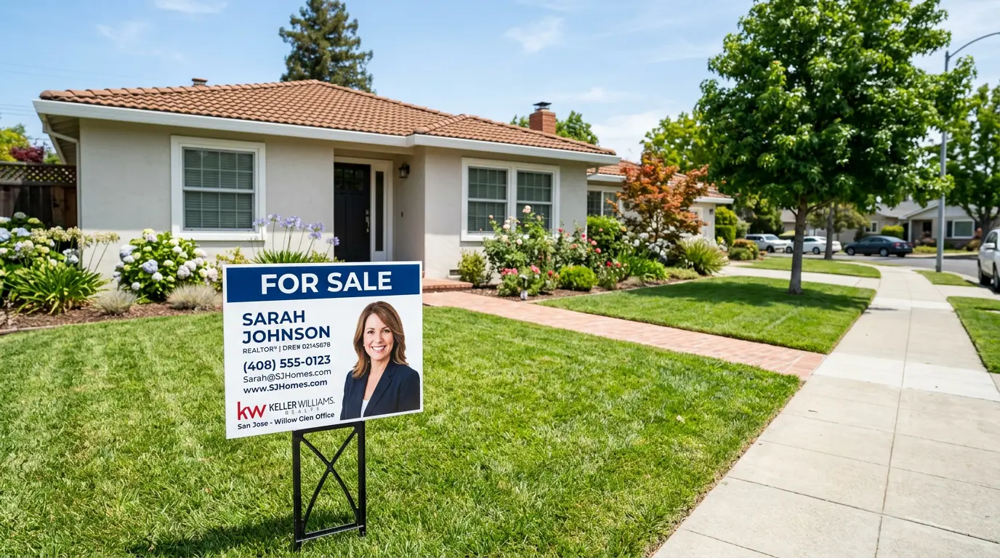
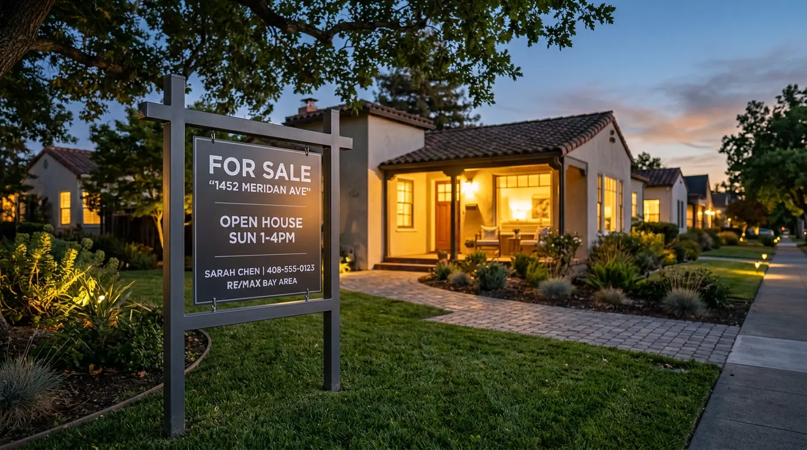
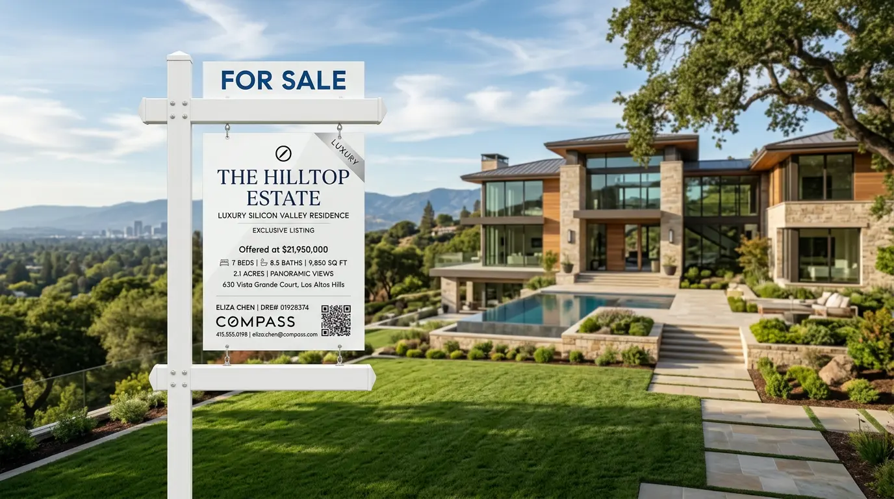
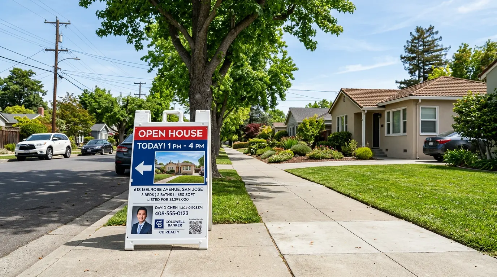
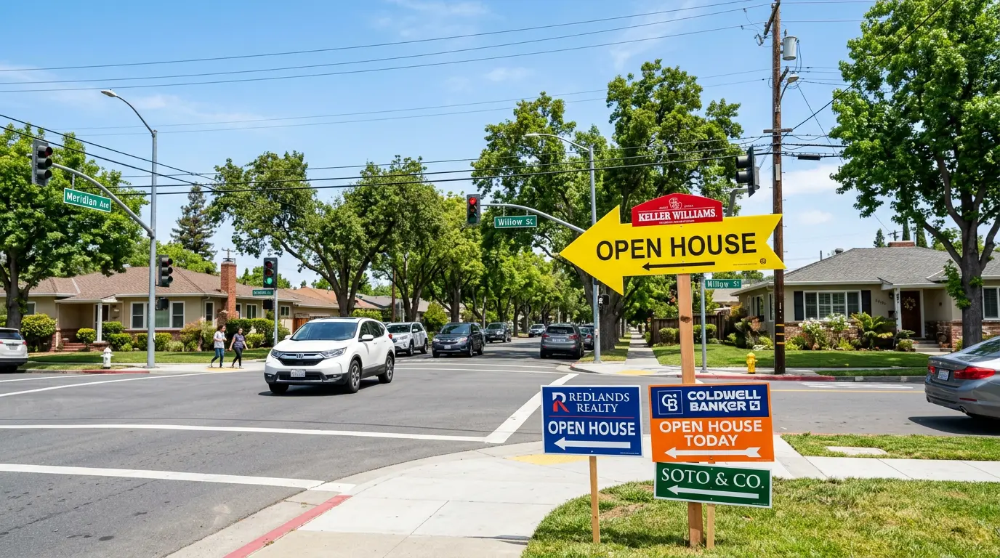
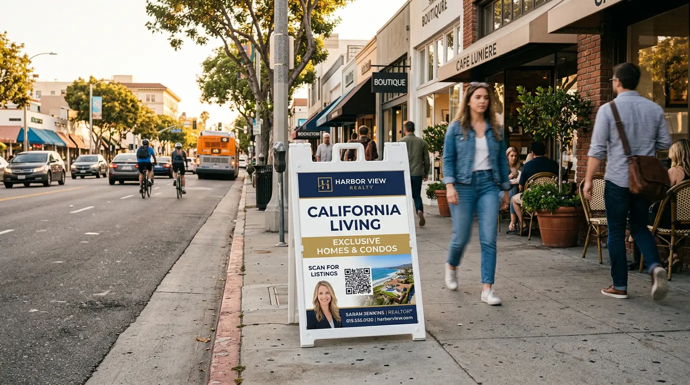
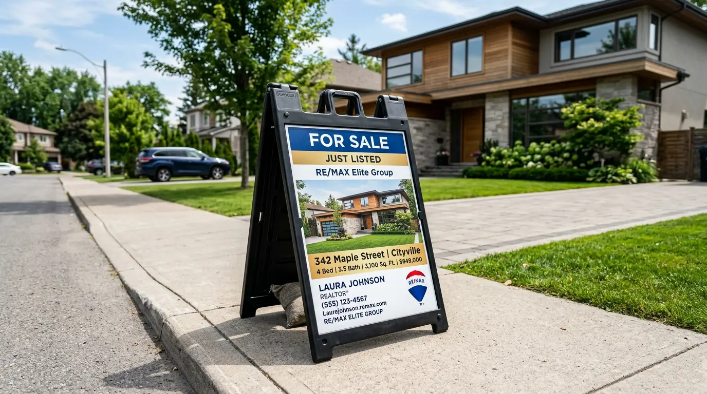

Yard signs, A-frames, post signs, Signicade displays, and open house signs — custom printed for realtors and brokerages across San Jose, Silicon Valley, and Santa Clara County. Fast turnaround, full-color print, reusable hardware.
Temporary real estate signs in San Jose are subject to the City sign ordinance. Permit requirements vary by sign type and location. Full details via SJPermits.org.
Real estate signs are personal branding — every listing is an opportunity to put your name and face in front of potential buyers in the neighborhood. In a competitive market like San Jose and Santa Clara County, consistent, professional signage across your listings builds local name recognition faster than almost any other marketing channel.
We supply the complete range of real estate outdoor signage — from inexpensive coroplast yard signs with H-stakes for high-volume agents to post-mounted aluminum composite signs for premium listings, Signicade A-frame displays for open house promotion, and directional arrow signs for neighborhood routing. All products are custom-printed full-color with your photo, logo, and contact info.
We work with individual agents, teams, and brokerages throughout Santa Clara County. Volume pricing is available for agents ordering in quantity — get in touch for a team or brokerage quote.
4mm coroplast, 24"×18" full-color print — the standard for residential listings across San Jose and Silicon Valley

4mm coroplast in 24"×18" — the industry standard size for residential yard signs in San Jose and Santa Clara County. Full-color print with your photo, brokerage logo, name, and contact info. H-stake hardware included. Weather-resistant, UV-stable print. Economical enough to use in volume across multiple listings simultaneously.
Most Common · Budget-Friendly
A steel-framed outdoor sign stand designed for drop-in one or two-sided coroplast or aluminum graphics. The frame stays in the ground — you swap graphics between listings without buying new hardware. Reusable across every listing, season after season. A smart investment for agents with consistent listing volume in San Jose neighborhoods.
Reusable · Steel FramePremium post-mounted and portable A-frame formats for listings that deserve a more substantial presence

Easy-to-assemble PVC post hardware with full-color aluminum composite sign faces. Post signs create a more permanent, professional presence at the property — common for luxury residential listings, commercial property listings, and new development sites across Silicon Valley. Aluminum composite faces are rigid, UV-stable, and built for months of outdoor exposure.
Premium · Aluminum · Long-Term
Portable A-frame sign designed for real estate use — typically placed at the property entrance or at nearby intersections on open house days. Full-color 24"×18" coroplast print. Lightweight, folds flat for transport, and sets up in seconds. Great for open house directional use alongside yard signs to route buyers from nearby streets.
Portable · Open House
Arrow-shaped coroplast signs placed at intersections to route buyers to your open house. Typically ordered in sets of 6–12 for full neighborhood coverage. Full-color print with your branding and the open house address or date. Placed Saturday morning, collected Sunday afternoon — H-stakes and arrow shape make them fast to deploy and retrieve.
Sets of 6–12 · H-StakeGenuine Plasticade Signicade A-frames — the most recognized sidewalk sign in California retail and real estate

Genuine Plasticade hardware with 24"×36" mounted vinyl graphics. The most widely used sidewalk A-frame in California — lightweight, weather-resistant, and universally recognized. Suitable for storefronts, open houses, and any outdoor location where you need portable branded presence.
24"×36" VinylThe step up from Standard — 24"×36" coroplast inserts with easy-change graphics. The Deluxe frame accepts standard coroplast inserts, so you can swap in fresh graphics for each open house without replacing the frame. A smart choice for high-volume agents who run multiple open houses per month in San Jose.
Easy-Change Graphics
A compact Signicade alternative in a 22"×28" format — slightly smaller than the Standard but with the same Plasticade-style durable plastic frame and easy-change coroplast inserts. Common in tighter sidewalk spaces and for agents who want a slightly more compact A-frame presence at the listing.
22"×28" · CompactAlready have your A-frame graphic inserts? Order hardware only — the Plasticade frame without the printed graphic. Useful for agents adding more frames to their existing inventory or replacing worn hardware while keeping their current coroplast inserts.
We work with individual agents, teams, and brokerages across Santa Clara County. Here's what agents tell us matters most.
A listing agreement is signed and your sign needs to be in the ground in days, not weeks. We keep turnaround times tight — most coroplast yard signs and inserts are produced and ready within 2–3 business days. Rush options are available when your timeline is even tighter.
Individual agents ordering a handful of signs pay one rate. Teams and brokerages ordering 20, 50, or 100+ signs at a time get volume pricing. We work with brokerages to standardize sign templates across all agents — consistent branding, easier reorders, better pricing.
San Jose listings can sit on market for weeks or months — your yard sign needs to hold up in direct California sun without fading, cracking, or warping. Our coroplast and aluminum composite prints use UV-stable inks rated for outdoor California exposure. Your sign looks as good in month three as it did on day one.
Agent photo printing is standard — not an upgrade. Your headshot, brokerage logo, brand colors, and contact info are all part of the template. We work from your existing artwork or can produce a sign template for you if you're starting fresh.
From solo agents to large brokerages — we handle sign orders for every type of real estate professional in Santa Clara County.
Single-agent orders with your own branding — photo, logo, and contact info. Quick reorder process once your template is on file with us.
Consistent branding across team members — one master template, multiple agent names. Volume pricing applies when team orders are placed together.
Standardized sign programs for brokerages with multiple agents. We handle the template management and produce signs per-agent as needed, billed to the brokerage.
Premium post signs with aluminum composite faces for listings where the yard sign needs to match the caliber of the property and neighborhood.
Post signs, large-format coroplast, and building-mounted signage for commercial property listings, office space for lease, and retail for lease signs throughout Silicon Valley.
Construction site signage, community entry monument signs, and project marketing displays for residential developers and builders active in San Jose and surrounding cities.
Real estate signs are often ordered alongside these products.
Most real estate sign orders follow this simple process — designed for agents who need to move fast.
Send us your logo, headshot, brokerage branding, and contact info. If you have a print-ready file, we go straight to production. If you need a design, we produce a template for your approval — typically within 1 business day.
We send a digital proof showing exactly how your sign will print — colors, layout, photo placement, and text. Once approved, production begins immediately. Returning agents with an existing template skip directly to this step.
Coroplast yard signs and inserts are typically produced within 2–3 business days after proof approval. Aluminum composite signs and post hardware take slightly longer. Rush options available when your listing timeline is tight.
Pick up from our San Jose location or arrange local delivery. For brokerages ordering in volume, we coordinate scheduled deliveries on a regular cadence — monthly or as-needed, depending on your listing volume.
Based in San Jose — we produce and deliver real estate signs throughout Silicon Valley and Santa Clara County.